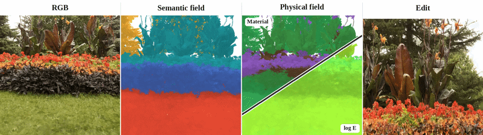
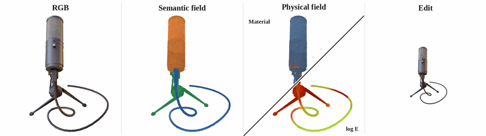

World Models & Video
Learning visual dynamics that are controllable, physically meaningful, and useful beyond generation.
Computer Vision · Machine Learning · Robotics
I study how visual systems can understand, generate, and interact with a changing world.
I am an M.S. student at the University of Chicago and a research intern at the GMLR Lab, University of Pennsylvania. My work spans 3D/4D vision, video and world models, and embodied intelligence. I also have been fortunate to collaborate with Prof. Michael Maire, Prof. Anand Bhattad, Prof. David Forsyth and Prof. Jiatao Gu.
02 / Research
Learning visual dynamics that are controllable, physically meaningful, and useful beyond generation.
Representing dynamic scenes in ways that support reconstruction, tracking, editing, and reasoning.
Studying how embodied agents perceive, reason about, and interact with complex, dynamic environments.
03 / Selected publications
Add, remove, or reorder entries in one repeated block.


Under review at 3DV 2027 · 2026
A shared PowerFoam cell graph unifies semantic and mechanics inference with native physics-aware editing.

Under review at AAAI 2027 · 2026
We present PAVE, a training-free framework that uses geometric future anchors to combine the precise content control of image inpainting with the visual and geometric consistency of video world models for long-horizon world generation.
04 / Experience
2025 — Present
M.S. in Computer Science · Research with Prof. Michael Maire
Summer 2026
Research Intern · World models and embodied intelligence
Summer 2025
Research Intern · 3DGS and world models
Earlier
Bachelor's studies · Information systems and computer science
05 / Contact